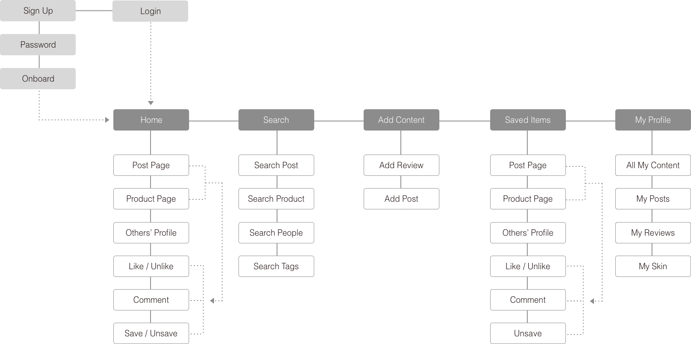
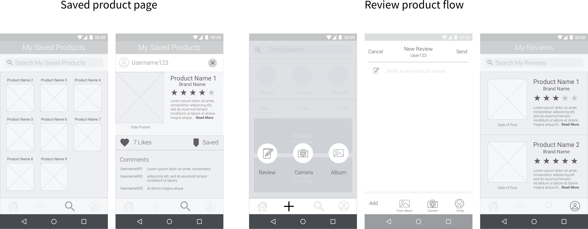

Low-mid fidelity sketches combined with a sitemap allowed our team to iterate quickly and review proposed changes with product and engineering stakeholders for their feedback
When we reviewed the low-fidelity items, our stakeholders wanted the team to emphasize the social media posting flow of the interactions more specifically because their machine-learning model relied on that behavior to source information. With that feedback in mind, we created wireframes to flesh out the interaction patterns with more detail.


